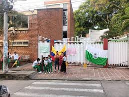

Recursos para la Excelencia Académica
Equipamiento moderno y espacios especializados al servicio de la formación técnica.
Laboratorios TICS
Cuatro salas de cómputo con equipos de última generación y acceso a internet de alta velocidad.
Ver ReglamentoTalleres Agropecuarios
Áreas de práctica especializadas para cultivos, cría de especies menores y agroindustria.
Conoce los TalleresBiblioteca Digital y Física
Amplia colección de títulos técnicos, literatura y acceso a recursos digitales de investigación.
Ingresar al CatálogoOficina de Bienestar y Apoyo Social
Nuestra prioridad es el desarrollo integral. Ofrecemos acompañamiento profesional para garantizar un ambiente escolar seguro y saludable.
- **Psicorientación:** Apoyo emocional y académico individualizado.
- **Servicio Médico:** Primeros auxilios y campañas de salud preventiva.
- **Restaurante Escolar:** Servicio de alimentación subsidiado para estudiantes.

Actividades Deportivas y Culturales
Fomentamos el talento y la disciplina a través de nuestros semilleros y grupos.
Deportes
Semilleros de fútbol, baloncesto y voleibol. Torneos interclases y participación municipal.
Cultura y Arte
Grupos de danza folclórica, música tradicional y teatro. Eventos y festivales anuales.
Ecología y Proyectos
Club de ecología, proyectos de reciclaje y cuidado de las zonas verdes institucionales.